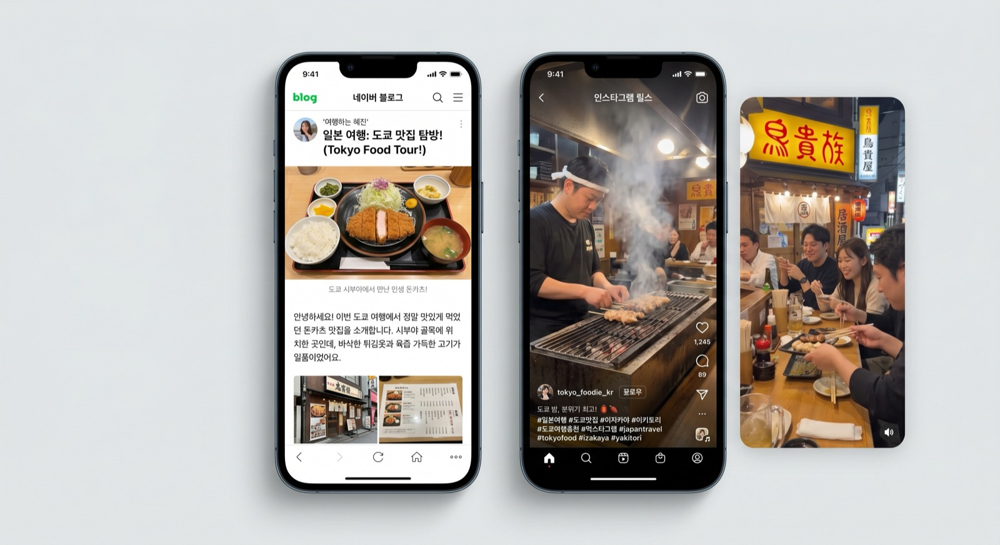

インバウンド施策を考えるとき、中国・台湾に注目する企業は多いですが、実は訪日外国人の国籍別ランキングで常に上位2位以内に入るのが韓国人です。2026年においても、韓国は日本への最大・最多の訪問者を送り出す市場であり続けています。
それにもかかわらず「韓国人向けのインバウンド施策」は、中国向けに比べて情報が圧倒的に少ない状況です。本記事では、訪日韓国人の旅行動向・消費行動データをもとに、Naverブログ・Instagram・KakaoTalkを活用した具体的な集客戦略を解説します。
訪日韓国人の現状データ【2026年最新】
まず、訪日韓国人の最新動向を数字で把握しましょう。
2025年訪日韓国人数
（国籍別No.1）
個人旅行（FIT）の割合
（リピーターが多い）
一人あたりの平均消費額
（2025年・観光庁統計）
訪日韓国人の大きな特徴は、リピーター率の高さです。韓国から日本は飛行機で最短1〜2時間と近く、「友人の家に行くような感覚」で訪日する人も多いです。そのため、「初めての日本」より「また行きたいあの店・あの場所」という体験価値の提供が鍵になります。
韓国人旅行者の情報収集行動：どこで「日本旅行」を調べる？
韓国人旅行者が訪日前に情報を収集するプラットフォームは、中国人旅行者とは異なります。正しいプラットフォームを選ぶことが集客の第一歩です。
| プラットフォーム | 利用目的 | 日本インバウンドでの重要度 |
|---|---|---|
| Naverブログ | 旅行記・グルメ情報の詳細検索 | ⭐⭐⭐⭐⭐ 最重要 |
| ビジュアル発見・「映える」場所探し | ⭐⭐⭐⭐⭐ 最重要 | |
| YouTube | 旅行Vlog・観光地の雰囲気確認 | ⭐⭐⭐⭐ |
| KakaoTalk | グループ旅行の情報共有・ブランド公式チャンネル | ⭐⭐⭐ |
| TikTok（ティックトック） | トレンド・ショート動画での発見 | ⭐⭐⭐ |
| Naver地図 | 店舗検索・ルート確認 | ⭐⭐⭐⭐ |
Naverブログ：韓国版「食べログ×ブログ」の最重要プラットフォーム
韓国には「Naver（ネイバー）」という韓国最大の検索エンジンがあります。日本人が「ぐるなびで調べる」「Googleで口コミを読む」のと同じように、多くの韓国人はNaverブログで「日本 ◯◯ おすすめ」と検索して店舗を探します。
Naverブログを活用した集客戦略
- 韓国語インフルエンサーによる体験投稿依頼：Naverで影響力を持つ日本旅行系ブロガーに店舗を体験してもらい、詳細な旅行記を書いてもらう
- Naverブログ最適化（NEO SEO）：キーワードを意識した体験レポートを蓄積することで、検索上位に表示されやすくなる
- オーナー公式ブログの開設：店舗自身がNaver公式ブログを持ち、韓国語で定期的に情報発信する
Naverブログのポイント
Naverでの検索は「일본 도쿄 맛집（日本 東京 グルメ）」「일본 온천 료칸（日本 温泉 旅館）」などのキーワードで行われます。これらのキーワードで上位に表示されるブログ記事を蓄積することが、韓国人集客の最速の方法です。記事1本の作成には韓国語ライティング能力が必要なため、専門家への依頼が現実的です。
Instagram：「映える」体験を軸にした訴求が効果的
韓国の若い世代（20〜30代）を中心に、Instagramは旅行先探しの中心的なプラットフォームとなっています。特に「インスタ映え（인스타그래머블）」を重視する傾向が強く、フォトジェニックな空間・料理・体験が集客の鍵になります。

Instagram活用の具体的な施策
① ハッシュタグ戦略
韓国人ユーザーが検索する韓国語ハッシュタグを積極的に使いましょう。
- #일본여행（日本旅行）：5,000万件超の投稿
- #도쿄맛집（東京グルメ）：旅グルメ探しに多用
- #일본맛집（日本グルメ）：飲食店への集客に効果的
- #일본온천（日本温泉）：旅館・ホテルに有効
- #일본쇼핑（日本ショッピング）：小売・免税店向け
② 韓国人インフルエンサーの招待
Instagramで日本旅行コンテンツを発信している韓国語圏のインフルエンサーを店舗に招き、体験投稿をしてもらいます。フォロワー1万〜10万人のマイクロインフルエンサーが費用対効果・信頼性ともに高く、1件あたり3〜20万円程度が相場です。
③ ストーリーズ・リールスの活用
韓国の若い旅行者はInstagramのリールスで旅行先のショート動画を発見する傾向があります。料理が出てくる瞬間・料理人の手元・店内の雰囲気など、15〜30秒の魅力的な動画コンテンツが拡散しやすいです。
KakaoTalk：公式チャンネルでのリレーション構築
KakaoTalk（カカオトーク）は、韓国のLINEに相当するメッセージアプリで、韓国人の95%以上が使用しています。企業が「KakaoTalk チャンネル（公式アカウント）」を開設することで、フォロワーへの情報発信が可能になります。
- 季節のキャンペーン・割引クーポンの配信
- 来日タイミングに合わせたイベント情報の提供
- グループ予約のための問い合わせ窓口として活用
ただし、KakaoTalkチャンネルは既存顧客・リピーター向けのナーチャリングツールとしての位置づけが強いです。まず新規認知はNaver・Instagramで行い、来店後にKakaoTalkフォローを促す導線設計が効果的です。
韓国人観光客の消費行動：何を買い、どこで食べる？
韓国人旅行者 vs 中国人旅行者の違い
🇰🇷 韓国人旅行者の特徴
- 日本語・日本文化への理解が深い
- リピーター率が高く「通好み」の場所を探す
- コスメ・アニメ・温泉・居酒屋への関心が高い
- NaverブログとInstagramで情報収集
- クレジットカードや現金での決済が中心
🇨🇳 中国人旅行者の特徴
- 高額商品（化粧品・家電・食料品）の爆買い傾向
- 小紅書・大衆点評で事前リサーチ
- WeChat Pay・Alipay決済が必須
- ブランド・品質への信頼を重視
- 日本の「本物感・職人技」に価値を見出す
韓国人旅行者が特に興味を持つカテゴリは以下の通りです。
- 飲食・グルメ：ラーメン・寿司・焼き鳥・居酒屋・スイーツなど「本場の日本食」
- コスメ・ドラッグストア：日本の薬局コスメ・スキンケア（ドン・キホーテなどで大量購入）
- 温泉・旅館：日本式旅館での温泉体験（箱根・別府・草津など）
- アニメ・ポップカルチャー：秋葉原・池袋・なんばエリアでのオタク文化消費
- アウトドア・地方体験：リピーターが増えた近年、北海道・東北などの地方旅行も増加
これらの国籍別の消費傾向の違いや最新のデータに関しては、訪日外国人の消費行動データ分析の記事で詳しく解説しています。
業種別：韓国人向けインバウンド施策の具体例
飲食店・グルメ施設の場合
- NaverブログでのSEO対策（店名・エリア・料理名の韓国語キーワードで上位表示）
- インスタグラムの韓国語ハッシュタグ最適化
- Google マップに韓国語の説明・メニューを追加（Google翻訳では不十分なため、ネイティブ翻訳を推奨）
- 来店記念写真が撮れる「映えスポット」の設置
ホテル・旅館の場合
- Naver地図への登録と最適化（韓国人が「日本 旅館 おすすめ」で検索する際の入口）
- YouTubeでの旅館体験Vlog制作（または韓国人YouTuberへの依頼）
- 韓国語のウェルカムアメニティ・案内書の用意
- KakaoTalkチャンネルでの予約・問い合わせ受付
小売・コスメ・土産物店の場合
- Instagramでの韓国語コンテンツ発信（新商品紹介・スタッフ使用レポートなど）
- 韓国語対応スタッフの確保、またはタブレット翻訳ツールの設置
- 免税対応・クレジットカード対応の案内（韓国語で掲示）
韓国人向けインバウンド施策にかかる費用の目安
| 施策 | 費用目安 |
|---|---|
| Naverブログ インフルエンサー依頼（1件） | 3〜15万円 |
| Instagram インフルエンサー依頼（マイクロKOL・1件） | 3〜20万円 |
| 韓国語コンテンツ制作・月次運用代行 | 10〜25万円/月 |
| Naver・Google MAP 韓国語最適化（初期） | 3〜10万円 |
| KakaoTalkチャンネル開設・初期設定 | 5〜15万円 |
中国向けマーケティングと比べると、韓国向けはより低コストで始められるのが特徴です。まずNaver・Instagram向けに韓国語インフルエンサーを月1〜2名起用するところから始めるのがおすすめです。インバウンド集客全体の費用相場については、インバウンド集客の費用・料金相場の記事で比較・解説しています。
まとめ：中国×韓国の両輪でインバウンドを最大化する
訪日韓国人は、訪日外国人の中でも最大グループの一つでありながら、多くの日本企業が「中国人向け施策」に注力するあまり見落としがちな市場です。韓国向け施策への早期参入は、競合が少ないブルーオーシャンでもあります。
PROTECHでは、中国市場（小紅書・大衆点評・WeChat）だけでなく、韓国・台湾・欧米など多様なインバウンド市場への対応支援も行っています。「中国も韓国も、まとめて相談したい」という方もお気軽にご連絡ください。
各国市場の最新動向については、訪日外国人旅行の現状と課題【2026年最新】の記事もあわせてご覧ください。